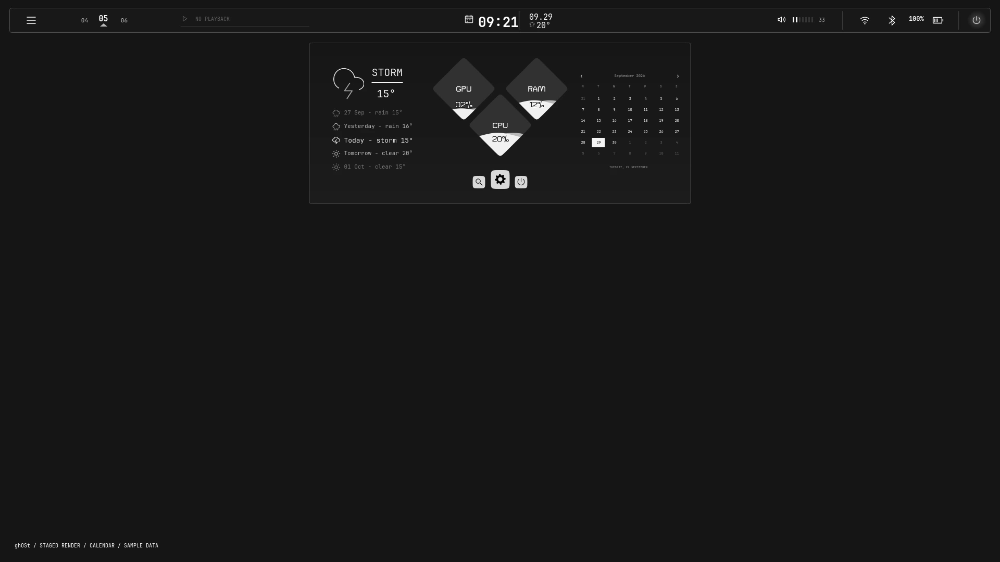

GRAPHICAL HYPRLAND OPERATING SYSTEM TOOLKIT
Preview
Arch Linux · Hyprland · Quickshell
Isolated component captures. Sample device names and weather are labeled.
Settings pages

State
Actual isolated Quickshell captures with labeled sample data. These are previews, not a live remote feed. The running desktop is unchanged by this update.
Changes
Settings: separate category frames, profile-picture chooser, PC-name editor and creator Info. Sidebar: left-to-right grouped entrances and 15/11px corners. Rail: Nerd typography and centered indicator. These changes remain opt-in; independent notifications and further Figma matching are pending.
CHANGES ↗ · PROGRESS ↗